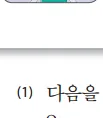
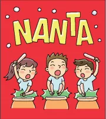

▶ 다음을 읽고 질문에 답하십시오. Прочитайте и ответьте на вопросы.
마지나
저는 지난주 토요일에 나기마와 함께 유나 집에 다녀왔습니다. 유나 집은 학교에서 조금 멀었습니다. 저는 유나 집에 어떻게 가는지 잘 몰라서 나기마를 일찍 만나서 같이 갔습니다. 우리는 먼저 지하철 2호선을 타고 교대역에서 내려서 3번 출구로 나갔습니다. 3번 출구로 나가서 똑바로 걸어가다가 오른쪽으로 돌면 큰 쇼핑몰이 있습니다. 쇼핑몰 건너편에 아파트가 있는데 그 아파트가 유나가 살고 있는 곳이었습니다.
카이라트
어제 저는 한국 친구와 같이 인사동에 갔습니다. 인사동은 서울 중심에 있어서 찾기가 쉬웠습니다. 우리는 지하철 2호선을 타고 가다가 을지로 3가역에서 3호선으로 갈아탔습니다. 3호선을 타고 안국역에서 내렸습니다. 안국역 4번 출구로 나가면 인사동 골목이 나오는데 이곳에는 한국의 전통 물건들을 파는 가게와 미술관이 많아서 구경할 것이 많았습니다.

예스볼
저는 어제 명동에 있는 중국 식당에 갔습니다. 거기에서 친구와 저녁 약속이 있었습니다. 그런데 수업이 늦게 끝나서 약속 시간에 늦을 것 같았습니다. 서둘러서 택시를 타고 약속 장소로 갔습니다. 그렇지만 출퇴근 시간이어서 길이 너무 막혔습니다. 차가 막히는 시간에는 택시나 버스보다 지하철을 이용하는 것이 더 빠를 것 같았습니다.
(1) 다음을 읽고 맞으면 O, 틀리면 X를 쓰십시오.
① 마지나 씨의 집은 학교에서 멉니다.
② 카이라트 씨는 지하철을 두 번 갈아탔습니다.
③ 예스볼 씨는 약속 시간에 늦어서 택시를 탔습니다.
(2) 빈칸에 알맞은 말을 쓰십시오.
| 어디에 갔습니까? | 어떻게 갔습니까? | |
|---|---|---|
| 마지나 | ||
| 카이라트 | ||
| 예스볼 |
마지나: 유나 집 / 지하철 2호선을 타고 교대역에서 내려 3번 출구로 나가서 걸어갔습니다.
카이라트: 인사동 / 2호선 → 을지로3가역 → 3호선으로 갈아타고 안국역 4번 출구로 나갔습니다.
예스볼: 명동의 중국 식당 / 택시를 탔습니다.
카이라트: 인사동 / 2호선 → 을지로3가역 → 3호선으로 갈아타고 안국역 4번 출구로 나갔습니다.
예스볼: 명동의 중국 식당 / 택시를 탔습니다.
▶ 다음을 읽고 질문에 답하십시오.

주방에서 일어나는 재미있는 이야기!
주방장과 세 요리사의 하루 일과가 시작됩니다.
가장 한국적이고 세계적인 작품 ‘난타’가 여러분을 찾아갑니다. 이번 기회를 놓치지 마십시오.
일시: 3월 20일 ~ 3월 30일까지 (오후 3시, 7시)
장소: 오페라 극장
버스: 101번, 지하철: 1호선 중앙역 2번 출구, 한국은행 건너편
예매: 인터넷 예매 www.opera-ticket.com
가장 한국적이고 세계적인 작품 ‘난타’가 여러분을 찾아갑니다. 이번 기회를 놓치지 마십시오.
일시: 3월 20일 ~ 3월 30일까지 (오후 3시, 7시)
장소: 오페라 극장
버스: 101번, 지하철: 1호선 중앙역 2번 출구, 한국은행 건너편
예매: 인터넷 예매 www.opera-ticket.com

(1) 다음을 읽고 맞으면 O, 틀리면 X를 쓰십시오.
① ‘난타’ 공연은 하루에 두 번 볼 수 있습니다.
② ‘난타’ 공연 티켓은 전화나 인터넷으로 예매해야 합니다.
③ 버스나 지하철을 타고 오페라 극장에 갈 수 있습니다.
(2) 버스를 타고 오페라 극장에 가려고 합니다. 순서를 만드십시오.
(3) 지하철 1호선을 타고 오페라 극장에 갑니다. 어떻게 가야 합니까?
중앙역에서 내려서 2번 출구로 나갑니다. 횡단보도를 건너서 한국은행 건너편으로 가면 오페라 극장이 있습니다.
(1) 먼저 다음 표에 정리된 내용을 읽으십시오.
| 어디에 갑니까? | 경복궁 |
| 어디에서 출발합니까? | 서울역 |
| 무엇을 타고 갑니까? | 지하철 |
| 어떻게 갑니까? | 서울역 / 4호선 / 타다 → 충무로역 / 내리다 / 3호선 / 갈아타다 → 경복궁역 / 내리다 / 3번 출구 / 나가다 |
(2) 위의 표를 보고 다음 글을 완성하십시오.
준영 씨, 경복궁에 어떻게 가는지 모르면 제가 가르쳐 드리겠어요. 먼저 서울역에서 지하철 을 타세요. 그리고 충무로역에서 3호선으로 . 그런 다음에 경복궁역에서 3번 출구로 똑바로 걸어가면 경복궁이 보일 거예요. 서울역에서 경복궁까지 25분쯤 걸려요.
1 다음 질문에 대한 대답을 쓰십시오.
| 어디에 갑니까? | |
| 어디에서 출발합니까? | |
| 무엇을 타고 갑니까? | |
| 어떻게 갑니까? |
2 위의 표에서 쓴 내용을 <보기>와 같이 쓰십시오.
<보기>
저는 오후에 동대문 시장에 갑니다. 서울대입구역에서 지하철 2호선을 탑니다. 사당역에서 내려서 지하철 4호선으로 갈아탑니다. 그리고 동대문역에서 내립니다. 동대문역에서 9번 출구로 나가면 횡단보도가 있습니다. 횡단보도를 건너면 동대문 시장이 있습니다.
저는 오후에 동대문 시장에 갑니다. 서울대입구역에서 지하철 2호선을 탑니다. 사당역에서 내려서 지하철 4호선으로 갈아탑니다. 그리고 동대문역에서 내립니다. 동대문역에서 9번 출구로 나가면 횡단보도가 있습니다. 횡단보도를 건너면 동대문 시장이 있습니다.
✓ 목적지 ✓ 출발지 ✓ 교통수단/호선 ✓ 갈아타는 역 ✓ 출구 번호 ✓ -아서/어서, -(으)면